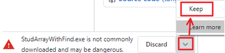
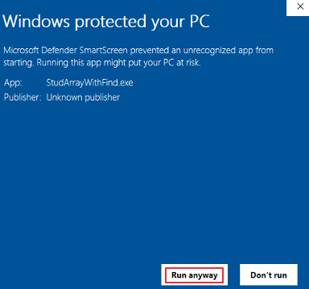

2nd Normal form involves the creation of tables
This project was inspired by students working on the Grok SQL course, which gives practical examples of SQL for filtering and ordering.
From the initial flat file (single table):Access (.accdb) and Word "How to" files are stored in the "Releases" section of GitHub. Suggestions regarding errors would be gratefully received at: neville.goodyer@det.nsw.edu.au.
| Version and link | Notes |
| Pascal code |
Species spreadsheet |
| Python code |
Species database |
| JavaScript v1.05 code page |
|
In Chrome on PC, when you download a release above, click "Keep" as shown below:

If you see this message, click "More Info":
And then "Run anyway":
